Oggi abbiamo i Dati

Motivations

High entrance barriers
You need a Ph.D. in the specific domain to do research. But sometimes even to understand the results.

Overspecialization in Science
Very difficult to cross the branches of science.
Slow learning curve
Very difficult to perform self-education path
Components
"Simplicity is the ultimate sophistication"
Data visualization
Interactive visualizations of results.

Gamification
Involve general audience to partecipate.
images:[ Jegi - flickr ]
Motivations 2
I was born in Rome
I had a very difficult childhood


Rome public transport are "not so good".
Ok. But how much compared to the other cities?
Where is the better served [by public transport] place in the city?
And in the world?
CityChrone
Presentation
Expansion
credits: bighistoryproject.com
Sociality, trades ...
Created by London-based data visualisation studio Kiln and the UCL Energy Institute
Urbanization and cities:
The birth of cities.
The history of foundation.
Created by: @galka_max
World City Populations.
Data, visualizations, algorithms
Urban Accessibility measures
Boundaries and Tessellation.
It is possible to compute isochrones

First step towards an accessibility measure:
The larger isochrones are, the faster you move.
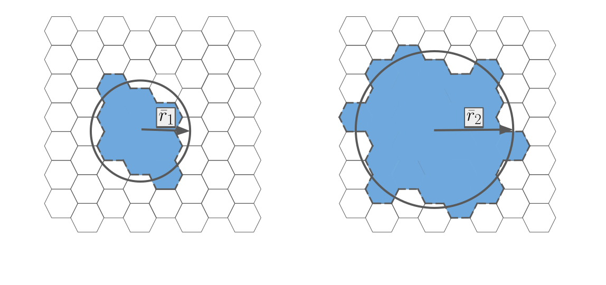
Velocity Score
Average velocity taking a random direction
Paris
Rome
 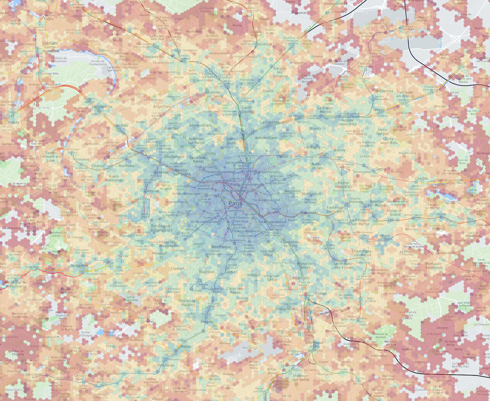
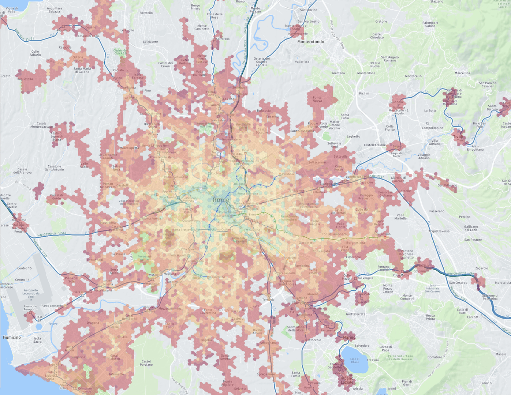
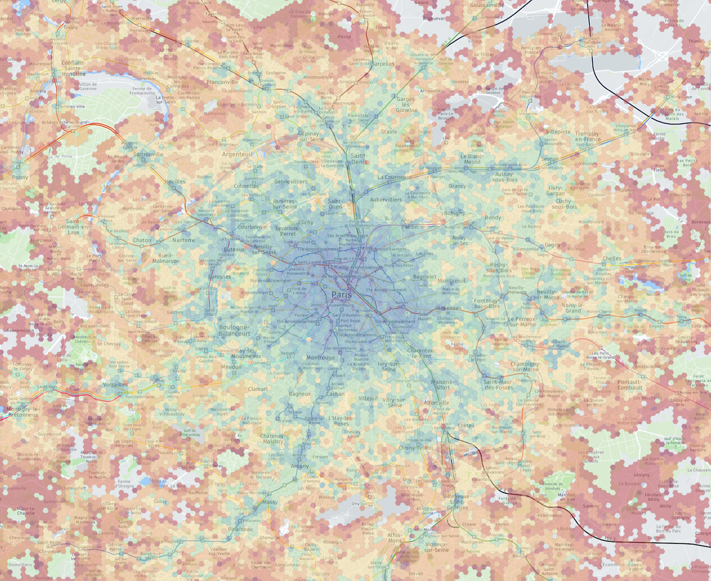
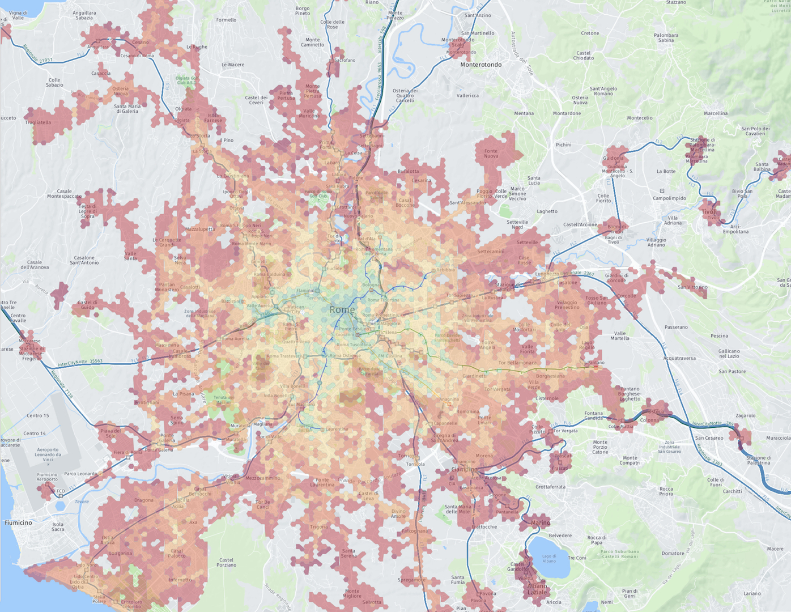
interactive maps and more cities:
Sociality Score
Number of people is possible to reach in a typical day trip starting from a point.
Paris
Rome
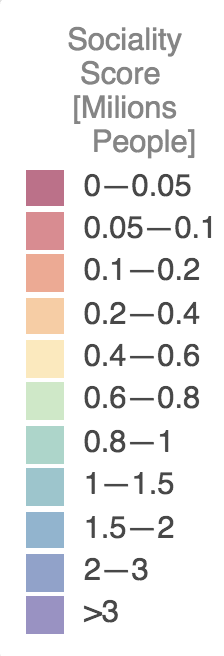
 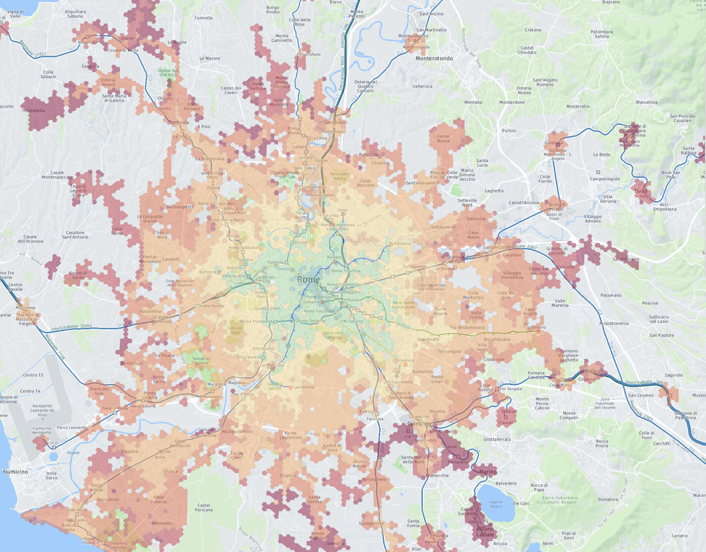
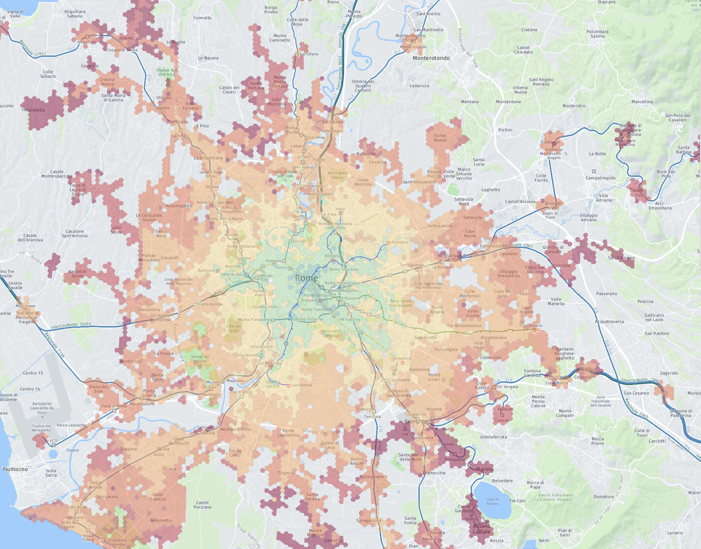
interactive maps and more cities:
City Rankings
City Velocity
Velocity Score per person

City Sociality
Sociality Score per person

Cohesion
City Sociality divided by total population

CityChrone
Interactive platform
Citizen Science [DataViz & Gamification]
SETI@home [1999]: analyze radio signals, searching for signs of extraterrestrial intelligence. People can partecipate using their PC, donating their computational resources.
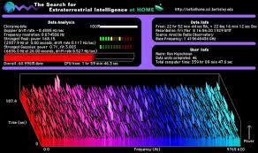
foldit [2008]: fold the structures of selected proteins as perfectly as possible, using tools provided in the game. Nature paper with credits more than 57000 authors.

Quantum Moves [2012]: simulations of logical operations in a quantum computer. Played over 8 million times by more than 200,000 players worldwide.
The 200 000 players were all beaten by the stochastic optimization method. :(

CityChrone
Interactive platform
Now I know how much Rome public transports suck
What we have to do to reach Paris?
What are the best interventions given a budget?
Let's Play!
CityChrone
Interactive platform for exploring new scenario
Budget: 5 Bilion €
Name Scenario: Gram Author: Pietro
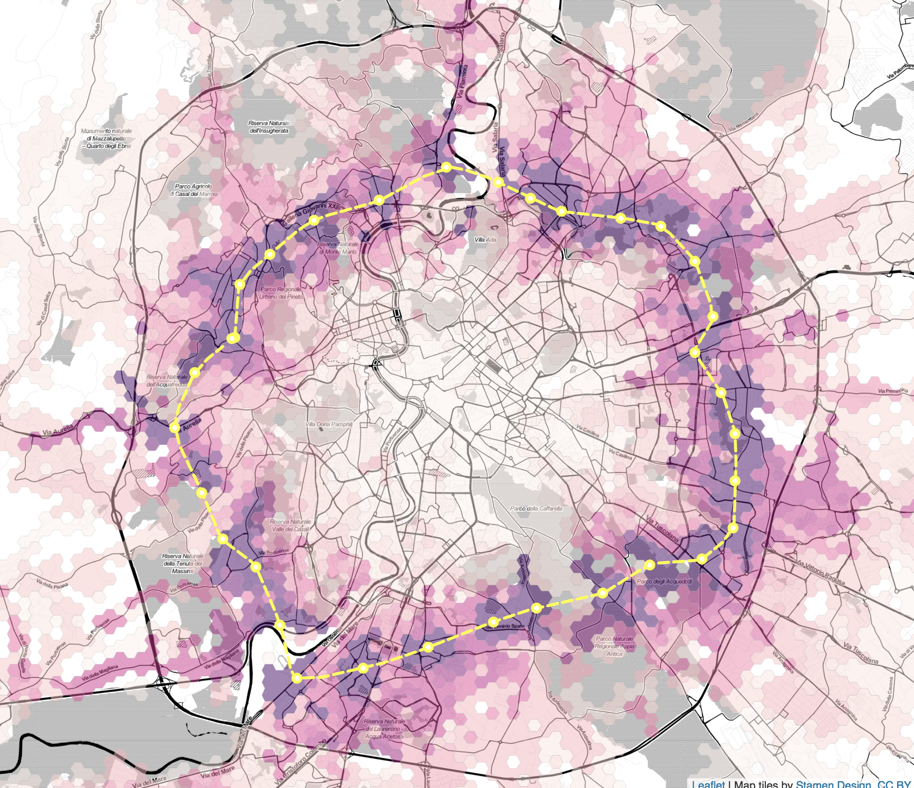
After 1 year
Name Scenario: rer + circle Author: mat
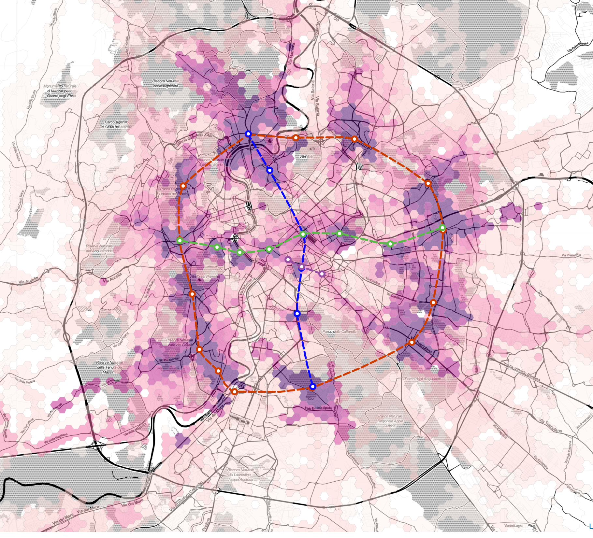
The future of public transports in cities
Bad ending for my current research, but happing ending for public transport in the cities?
Average person per car 1.2

95% of the time the cars are parked

Collaborators: